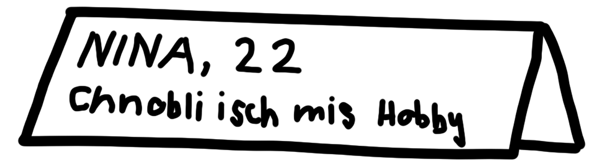
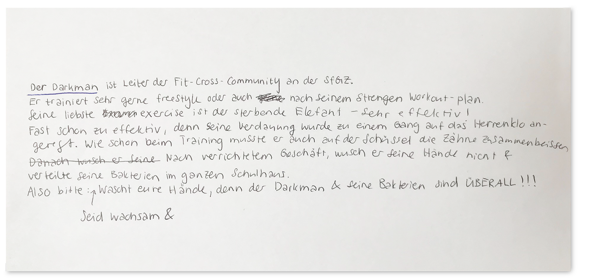
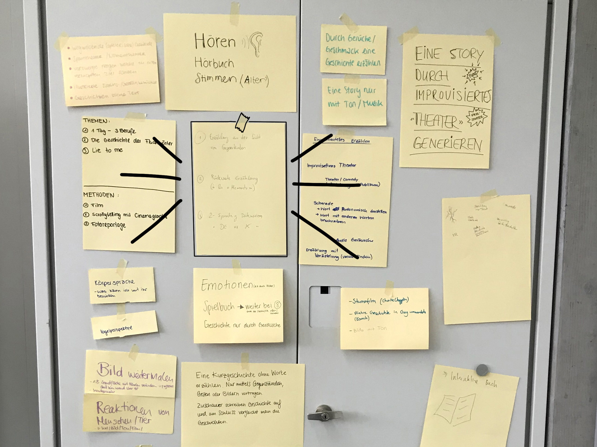
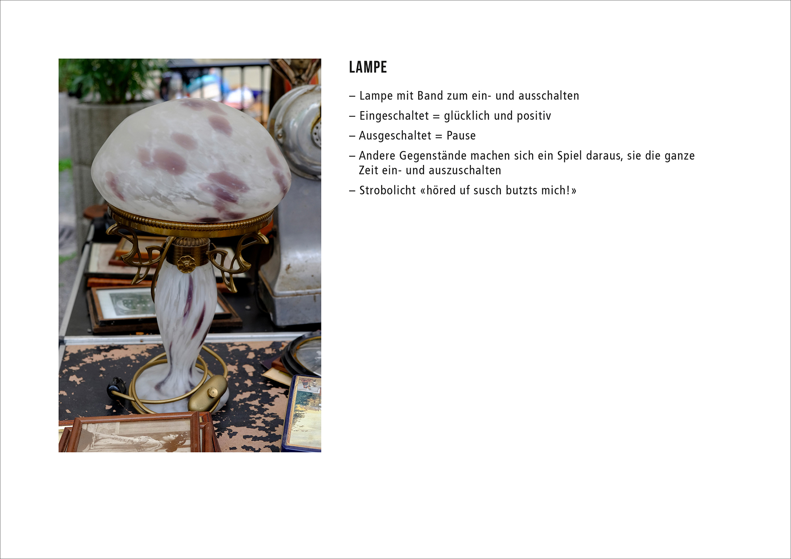
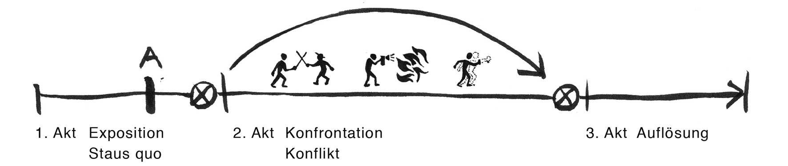
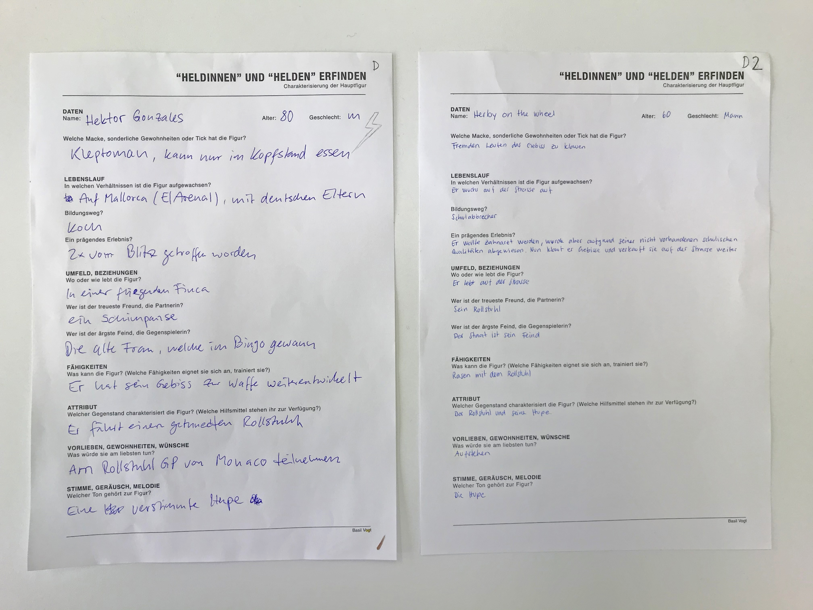
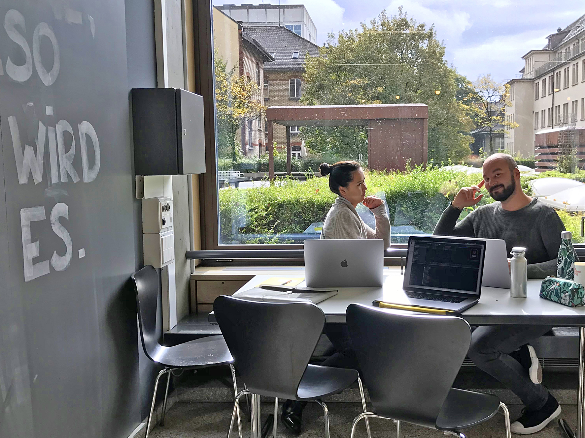
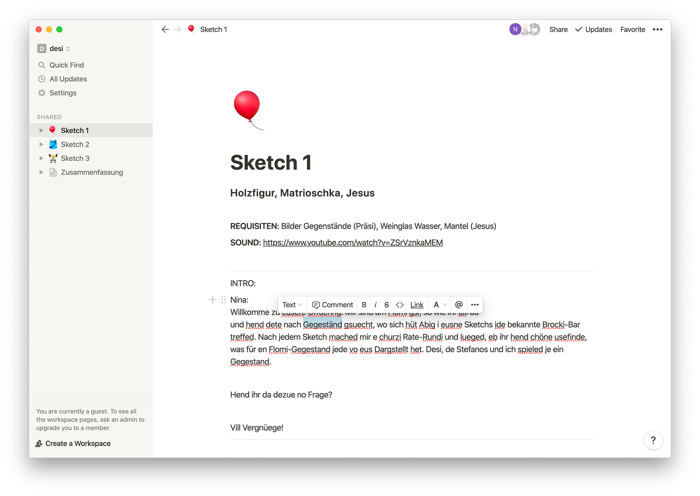
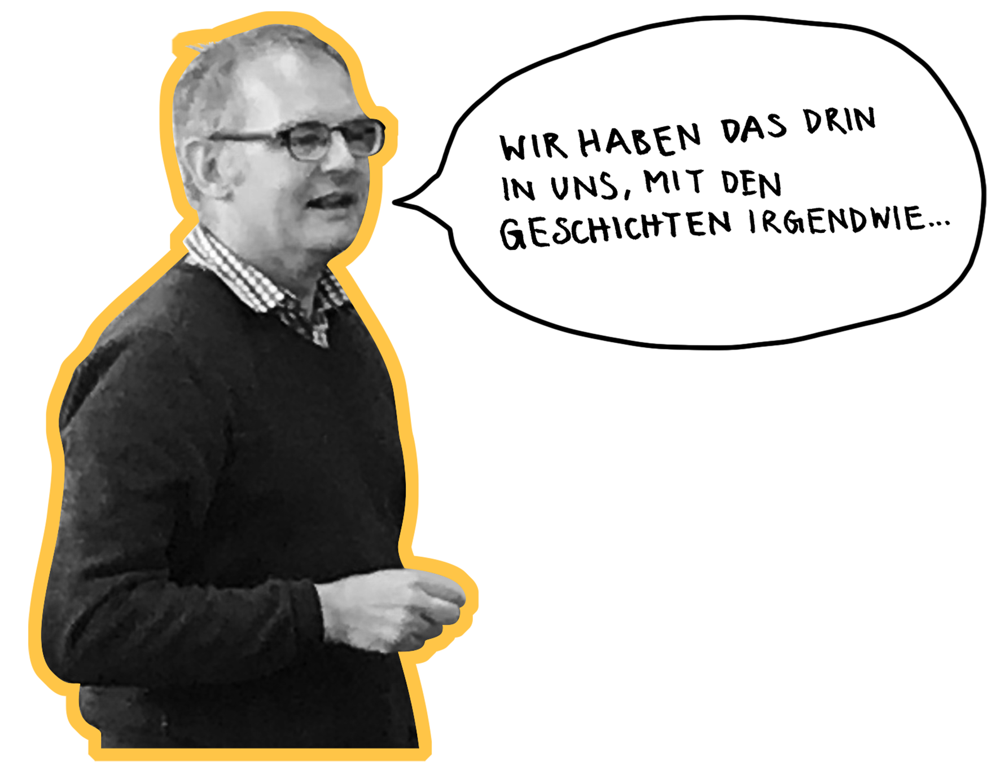

Quelle: matteofarinella.com/The-Senses
Experimentelles Erzählen
Tag 1
SA / 24. August 2019
Vorstellungsrunde
Da sassen wir nun, als einen Tag alte Schulklasse, und warteten gespannt auf die Auflösung, was denn dieses «experimentelle Erzählen» sein könnte. Basil verteilte uns gleich zu Beginn, wie es sich gehört, ein Blatt Papier, welches wir zum Namensschild umfunktionieren sollten. Aber kein normales Namensschild. Es mussten Informationen drauf stehen, die wir von uns ins Internet stellen würden. Eine Profil-Bio sozusagen. Bei mir stand beispielsweise «Nina, 22, Chnobli isch mis Hobby.» Wir setzten uns einzeln nach vorne, stellten das Namensschild vor uns auf und taten so, als wären wir ein Profilbild. Ein Social-Media-Profil im realen Leben. Der Rest der Klasse durfte sich das Profil ansehen und rätseln, was diese Person wohl für Hobbies, Leidenschaften oder Berufe hat. Es war sehr unterhaltsam, was dabei alles für Szenarien entstanden. Mein Satz sollte suggerieren, dass ich gerne koche. Meist mit viel Knoblauch. Es kursierten Theorien wie: Ich habe eine Katze namens Chnobli, ich stelle Gewürzmischungen mit Konblauch her oder ich bin Poetry-Slammerin und dies sei eine Zeile aus einem meiner Texte. Die Stimmung war locker und wir freuten uns auf die nächste Aufgabe.
Mein Namensschild
Dias & Geschichten
Für den nächsten Auftrag forderte Basil uns auf, in 3er-Gruppen Fotos der Umgebung zu machen. Wir rüsteten uns mit neun leeren Diafilmen aus und zogen los. Jedoch ohne Kamera, denn ein Gruppenmitglied funktionierte als «lebendige Kamera» und ein anderes als Auslöser – ja du hast richtig gehört. Die Kamera schloss die Augen und wurde vom Auslöser zu einem attraktiven (oder auch nicht) Motiv geführt. Sobald er die Hand der Kamera drückte, öffnete diese die Augen und prägte sich für zehn Sekunden das gesehene Bild ein. Anschliessend zeichnete sie dies auf ein Dia. Wir wechselten uns ab und zählten nach dreissig Minuten neun gefüllte Dias. Zurück im Klassenzimmer durften wir mit dem geschossenen Material eine kurze Geschichte erfinden. Die Anzahl und Reihenfolge der Dias spielte dabei keine Rolle. Nach zehn Minuten Texten durften wir noch zwei weitere Interpretationen zu den Dias anderer Gruppen schreiben. Es entstanden die wildesten Stories. Kurze Zeit später holte Basil seinen 80er-Jahre Dia-Projektor hervor. Mit kleinen Startschwierigkeiten seitens der Technik begannen die Geschichten-Präsentationen. Es wurde jeweils zu erst die originale Geschichte und anschliessend die Interpretationen vorgetragen. Es gab viel zu lachen und es faszinierte mich, wie verschieden und manchmal exakt gleich die Bilder interpretiert wurden. Um etwas Spannung zu schaffen, haben sich viele an Elementen wie Krimi, Mord, Explosion oder Superhelden bedient.

Unsere «fotografierten» Dias
Die erfundene Geschichte
Weitere Erzählstile & -medien
Basil zeigte uns noch weitere Modelle von experimentellem Erzählen, wie Comics ohne Text oder sogar welche, die nur mit Punkten als Hauptfiguren funktionierten. Wir lernten auch noch ein Programm namens «Edupad» kennen, welches einer Gruppe ermöglicht, gleichzeitig einen Text zu verfassen. Wir tobten uns ein wenig aus und konnten fast nicht mehr damit aufhören. Dann mussten wir unsere Edupad Session unterbrechen, um noch eine Runde «Veto» zu spielen. Ein Heft, mit welchem man mit Hilfe von Verästelung interaktiv erzählen kann. Ein echt witziges Spiel!
Tag 2
SA / 7. September 2019
Game aus Zeitungsartikel
Kaum hatte die Stunde begonnen, waren wir bereits wieder komplett in Basils experimentelle Welt eingetaucht. Er verteilte kurze Zeitungsmeldungen, welche er angeblich leidenschaftlich sammelte und kürzlich zuhinterst im Schrank wieder entdeckte. Nun war unsere Aufgabe eine Meldung auszuwählen und in 3er-Teams ein Game aus dieser zu entwickeln. Wir mussten uns Gedanken machen über Fragen wie: Wer ist die Hauptfigur? Was ist das Ziel des Spiels? Welche Thematik wird behandelt? Wer ist der Gegner? Nach dreissig Minuten präsentierten wir unser Endergebnis der Klasse. Unser Artikel handelte von einem zweijährigen Jungen, der ohne seine Eltern loszog, um im Supermarkt Süssigkeiten zu klauen – was für eine Ausgangslage für ein Game! Mit dem Einkaufswagen rennt man durch die Regale und sammelt die Süssigkeiten ein. Der Endgegner: die Mutter. Ich war sehr zufrieden mit unserem Ergebnis. Der Entwurf hatte Hand und Fuss und sah dazu noch gut aus, oder?

Der Zeitungsartikel
Das von uns kreierte Game
Projekt
Ideenbörse
Begeistert von den entstandenen Games durften wir anschliessend unsere Ideen für das bevorstehende Projekt auf einem Blatt festhalten. Jeder hing dieses dann an den Schrank, teilte kurz seine Gedanken dazu und somit war die Ideenbörse eröffnet. Es kristallisierten sich durch die verschiedenen Interessen und Inspirationen von alleine Teams heraus. Ich sass mit meinen neuen Teamkollegen Desiree und Stefanos zusammen und wir begannen das Projekt zu definieren und auszubauen.
Ideenbörse
PROJEKT
Unsere Idee
Wir hatten uns für einen Sketch mit Gegenständen in den Hauptrollen entschieden. Beispielsweise ein Stuhl, der es leid ist, dass jeden Tag andere Hintern auf ihm Sitzen. Wir lachten viel und die Kreativität floss. Die Stunde endete und wir hatten unser Projekt skizziert. Am kommenden Samstag werden wir den Kanzlei-Flohmarkt besuchen und uns dort auf die Suche nach geeigneten Gegenständen machen. Ausserdem werden wir das Konzept beziehungsweise die Absichtserklärung, in dem das Projekt noch genauer definiert wird, fertigstellen.
Tag 3
SA / 14. September 2019
PROJEKT
Flohmarkt Kanzlei
Bei Kaffee ohne Kuchen stellten wir in den Projekt-Gruppen unsere Idee vor und bekamen so einen kurzen Einblick in die anderen Konzepte. Danach machten wir uns auf den Weg zum Kanzlei Flomarkt, der schon voll im Gange war. Wie bereits erwähnt, stöberten wir nach Objekten für unseren Sketch und hielten diese mit meiner (diesmal echten) Kamera fest. Ein Verkäufer meinte sogar, dass wir von Telezüri sind – ich musste ihn leider enttäuschen. Der Flomarkt war trotzdem ein Erfolg, denn dies war der perfekte Ort für unser Projekt. Wir fanden viele Kuriositäten und begannen schon beim Betrachten kleine Geschichten und Charakterzüge zu erfinden. Eine Frau erzählte uns sogar, dass ihre Schreibmaschine einst der ersten Frau im schweizer Militär, Lieselotte Notter, gehörte – ein Prachtexemplar mit Geschichte also. Leider fand ich dazu nichts im Internet und Frau Notter bleibt für mich eine Legende.

Stefanos am Flomi

Die angebliche Schreibmaschine der Lieselotte Notter
Tag 4
SA / 21. September 2019
Zu erst das Vergnügen, dann die Arbeit
Basil hatte uns an diesem Samstag verschiedene Spiele mitgebracht. Ich fragte mich, woher er die wohl alle hatte – einige davon erschienen mir schon fast antik. Wir durften uns eines aussuchen und spielten dieses mit der entstandenen Gruppe. Unser Spiel bestand aus Frage- und Antwortkarten in den verrücktesten schweizer Dialekten. Einer las die Frage vor, der andere beantwortete sie – ganz simpel. Daraus entstanden viele lustige, sinnlose, teilweise jedoch auch sehr passende Dialoge und manchmal verstanden wir nicht einmal die Frage. Ich glaube, langsam hatte ich eine Idee, was dieses «experimentelles Erzählen» sein könnte – mal sehen, wo uns diese Reise noch hinführen wird.

Frage- und Antwortkarten des Spiels
Nach dem spielerischen Einstieg gab jede Gruppe einen kurzen Standortbericht, wo sie gerade mit ihrem Projekt stehen und was sie so am Flohmarkt erlebt haben. Es war interessant zu hören, was für unterschiedliches Material am selben Ort gesammelt wurde – ich bin sehr gespannt wie es nun weiter geht.
PROJEKT
Auswahl und Charakterbildung
Desiree, Stefanos und ich suchten uns ein Plätzchen im Schatten und wir begannen die am Flomarkt entstandnen Bilder zu sichten und auszusortieren. Jeder wählte schlussendlich acht Gegenstände aus, die er sich vorstellen konnte zu spielen. Nun versuchte jeder für sich den Objekten Leben einzuhauchen, indem er ihnen Charaktereigenschaften zuwies und mögliche Szenarien erfand. Wie könnte er sprechen? (Wie) bewegt er sich? Was könnte ihn beschäftigen?

Stefanos, Desiree und ich im Kreativprozess
Stichwortartige Charakterisierung der Lampe
PROJEKT
Funktioniert das?
Ausserdem wurde uns bewusst, dass wir an der Präsentationsart noch Anpassungen machen mussten. Ursprünglich war unsere Idee, dass jeder von uns seine Gegenstände nacheinander präsentiert und sobald einer erraten wird, wir den nächsten spielen. Beispielweise spiele ich eine Gabel, Stefanos ein Messer und Desiree einen Löffel. Wir führen einen Dialog zusammen und geben nach und nach Informationen preis, mit denen das Publikum den Gegenstand erraten kann. Findet das Publikum heraus, dass ich eine Gabel bin, bestätige ich dies und spiele dann meinen nächsten Gegenstand: eine Schere. So ergibt sich der Dialog eher zufällig, weil wir nicht genau wissen, mit welchen anderen Objekten wir interagieren müssen. Dabei haben wir aber die Zuschauer nicht so ganz berücksichtigt. Denn diese müssten während unserer Aufführung ständig dazwischenrufen und das würde den Fluss der Aufführung erheblich stören. Darum haben wir uns neu dazu entschieden, drei Gesprächsrunden mit je drei Gegenständen aufzuführen. Nach jeder Runde dürfen die Zuschauer erraten, was wir dargestellt haben. So können wir die Dialoge auch vorbereiten und so viel wie möglich aus ihnen herausholen. Ich war ehrlichgesagt erleichtert, dass ich nicht als Gabel, spontan, vor fünfzehn Klassengspändli ein Gespräch erfinden muss.
Tag 5
SA / 28. September 2019
Geht doch/geht nicht
«Hört Basil vielleicht mal auf zu reden?», fragte ich mich, auf meinem Holzstuhl sitzend, das überschlagene Bein schon zum zehnten Mal von der linken und auf die rechte Seite wechslend. Wir sassen seit fünfunddreissig Minuten da und besprachen, welche Erzählstile/-arten wir mögen und welche nicht oder in Basils sprache: «Geht doch» oder «geht nicht». Egal ob bei Hörbüchern, Büchern oder Filmen. Jeder hielt dazu seine Präferenzen auf einem Zettel fest. Diese las Basil dann alle einzeln vor und erläuterte nach denen des Verfassers auch noch seine Gedanken dazu. Die einen meinten, sie mögen Filme mit Happy-Ends total – andere fanden dies einfach nur langweilig und viel zu absehbar. Einige fanden es spannend, so viele Informationen wie möglich über die Figuren zu erhalten, andere empfanden dies als unnötig und einschläfernd. Die Geschmäcker sind eben verschieden.

Basil in seinem Element
Quelle: Stafanos / Danke für dieses herrliche Bild!
Erzähl-Theorie
Nach einer lang ersehnten Pause und mit frischem Kopf, unterrichtete uns Basil über verschiedene Erzählformen, wie «Spannung und Überraschung», «Ziel und Wunsch» oder «Sähen und Ernten». Auch die Strukturen von dramatischen und epischen Geschichten wurden uns erklärt, was dann etwa so aussieht:
Dies ist eine dramatische Geschichte, welche in drei Akte aufgeteilt wird. Im Ersten Akt wird man in die Ausgangssituation der Geschichte eingeführt, dann bekommt die Hauptperson einen Anstoss zum Handeln und durch ein Ereignis wird die Geschichte in eine neue Richtung gelenkt. Somit wird die Person im zweiten Akt mit einem Problem konfrontiert, welches sie natürlich zu lösen versucht. Im dritten Akt geht es um die Auflösung und die Frage, wie die Geschichte endet. Das war alles etwas kompliziert und ich musste mir dieses Material nochmals durch den Kopf gehen lassen. Nach diesem Theorieblock erhielten wir noch eine halbe Stunde Zeit, um in den Projekt-Teams zu arbeiten.
PROJEKT
Administratives
Wir besprachen unseren Zeitplan, den wir in der Absichtserklärung festgehalten haben. Wie bei vielen Projekten, wurde uns auch bei diesem bewusst, dass wir doch nicht mehr so viel Zeit zur Verfügung hatten, wie gedacht. Zudem stellten wir fest, dass jetzt die grosse Arbeit für unser Projekt begann und wir noch viel zu tun hatten mit dem schreiben der Dialoge sowie dem Proben. Aber ich war nach wie vor begeistert von unserer Idee und freute mich auf die Arbeit im Team.
Tag 6
SA / 5. Oktober 2019
Hektor Gonzales
So nennt sich unser, in einer kurzen Gruppenarbeit, kreierte Superheld. Wir erhieten von Basil einen Fragebogen, der dazu diente, einen Held oder eine Heldin zu charakterisieren. War der Fragebogen ausgefüllt, begannen wir unseren Hektor zu zeichnen. Das Resultat war ziemlich witzig und ich wurde wieder überrascht, wie viel Phantasie in uns schlummerte. Basils Aufgabe war jedoch noch nicht zu ende. Nun begann der Spass erst richtig. Wir tauschten unsere Zeichnung mit der einer anderen Gruppe und mussten anhand der neuen Zeichnung einen leeren Fragebogen ausfüllen. Unser eigene Fragebogen wurde mit nochmals einer anderen Gruppe getauscht und wir erstellten die dazugehörige Zeichnung. Zum Schluss hingen wir all unsere kreativen Ergebnisse an die Wand und Basil trug sie auf seine lustige Art vor. Es war spannend zu sehen, wie die Originale interpretiert wurden und welche neuen Charaktere daraus entstanden. Ich denke, es wäre auch interessant gewesen, wenn wir die neu kreierten Bilder immer wieder weitergereicht hätten. So könnte man sehen, wie viel von den Originalen noch übernommen und was alles neu interpretiert wurde. Nach dieser Aufgabe, die mir unerwartet viel Spass bereitete, setzten wir uns wieder an unser Projekt.

Links: Hektor Gonzales – das Original / Rechts: die Interpretation
Links: das Original / Rechts: die Interpretation
PROJEKT
Auswahl
Stefanos, Desiree und ich entschlossen uns, die Auswahl unserer Gegenstände nun noch etwas zu reduzieren und beschränkten uns auf drei pro Person, die uns wirklich gefielen. Danach begannen wir die Gesprächsrunden und somit auch die
Gesprächspartner (Gegenstände) zu bilden.
Die erste Runde «Holz» bestand aus:
– Matroschka
– Holz-Mannequin
– leidenden Jesus-Holzschnitz


Die zweite Gesprächsrunde «Party und Generationen» bildeten:
– Lampe
– Aschenbecher
– Betty Bossi Partykochbuch


Und die dritte Runde «Oberflächlichkeit» beinhaltete:
– Spiegel
– gefälschte Gucci-Tasche
– Playstation-Spielkonsole


PROJEKT
Erste Schritte
Wir begannen den ersten Dialog zu schreiben, machten uns Gedanken über mögliche Gesprächsthemen und liessen die von uns skizzierten Charaktere einfliessen, die sich so noch mehr entfalten konnten. Jesus kann beispielsweise Wasser in Wein verwandeln. In der Matroschka befinden sich noch 6 kleinere Matroschkas, die auch alle eine Meinung haben und diese auch lautstark vertreten. Die Holz-Mannequin braucht ausserdem ständig fremde Hilfe, wenn sie sich bewegen möchte.
Was würde eine Lampe wohl zu einem Aschenbecher sagen?
Tag 7
DI / Abend, 15. Oktober 2019
PROJEKT
Langeweile in den Ferien (Dialoge schreiben)
Weil uns in den Ferien langweilig war ;-), trafen wir uns an einem Dienstag Abend nach der Arbeit im Kosmos Buchsalon, um an den Dialogen weiterzuschreiben. Unser Ziel war es, bei Ladenschluss, der glücklicherweise erst um 22.00 Uhr war, drei erste Sketch-Dialog-Versionen fertigzustellen. Haben wir unser hochgestecktes Ziel erreicht? – Fast. 2,5 Dialoge waren das Endergebnis. Wir waren müde, aber sehr zufrieden mit dieser ersten Ausgabe.

Dialoge verfassen im Kosmos
Tag 8
SA / 26. Oktober 2019
Storyboards
Heute durften wir bei Basil etwas über Storyboards lernen. Diese werden beispielsweise im Film verwendet, um Drehbücher zu visualisieren. Uns wurden verschiedenste Ausführungen von Storyboards gezeigt. Einige waren sehr genau und ausführlich, andere eher skizzenhaft, aber dafür mit Text versehen. Was mir bisher noch nicht bekannt war, Meist wird auch die Kameraführung oder -perspektive mit Hilfe von Pfeilen eingezeichnet. Teilweise gehen die Zeichner sogar so weit, dass sie den Kameraleuten vorschreiben, welche Linse verwendet werden soll.
PROJEKT
Test, Test, 1, 2, 3
Wir waren froh, heute an unserem Projekt weiterarbeiten zu können. Bis zur Vorführung vor der ganzen Klasse gab es noch einiges zu erledigen. Wir starteten mit dem Fertigstellen des letzten Dialoges. Jeder las die Skripte nochmals für sich durch und brachte Verbesserungsvorschläge an, wo er sie für nötig hielt. Endlich konnten wir die Dialoge zum ersten Mal durchspielen oder vielmehr einander vorlesen. Wir mussten feststellen, dass es an einigen Stellen noch haperte. Diese versuchten wir nun umzuschreiben und zu verbessern. Das nächste Mal stand theoretisch bereits unsere Hauptprobe an. Wir nahmen uns alle fest vor bis dann all unsere Texte auswendig zu lernen.
Überarbeiten unserer Skripte
Tag 9
SA / 2. November 2019
PROJEKT
Ausgerechnet jetzt?
Mit Hilfe meiner Sprachnotizen-App konnte ich meine Zeilen gut alleine auswendig lernen. Ich nahm die Texte meiner Teammitglieder auf und liess für meinen Teil jeweils eine Pause auf der Aufnahme. Dies war ein etwas lustiges Verfahren und brauchte ein paar Anläufe, funktionierte jedoch einwandfrei. Stefanos und ich trafen soeben in der Schule ein, als uns Desis Nachricht erreichte. Sie war leider krank und konnte deshalb nicht an unserer Hauptprobe teilnehmen. Stefanos und ich machten das Beste daraus und versuchten, so gut es ging, alleine zu Proben. Wir gaben uns gegenseitig Feedback, was wir noch besser machen konnten und gaben unserem Sketch so noch den Feinschliff. Zu dritt vereinbarten wir einen neuen Termin für die Hauptprobe.
Tag 10
DI / Abend, 5. November 2019
PROJEKT
Auf die Plätze, fertig,
Wie abgemacht, trafen wir uns alle bei Stefanos zu Hause für unsere Generalprobe. Es forderte viel Konzentration alle Dialoge mehrmals korrekt aufzuführen. Dafür mussten natürlich alle Requisiten am richtigen Ort deponiert sein und die Texte (auch die mit russischem Akzent) mussten sitzen. Wir hatten dabei aber viel Spass und unser Ehrgeiz war jetzt zu gross, um die Sache nicht perfekt zu präsentieren. Wir fühlten uns danach relativ sicher, unser Werk vor der Klasse zu spielen. Jedoch war uns natürlich ungewiss, wie das Publikum reagieren wird. Werden sie es überhaupt lustig finden? Werden sie die Hinweise lesen und somit die Gegenstände erraten können?

Oooooooh! Die fertigen Skripte

Desi und ich beim Proben unseres ersten Sketches
Tag 11
SA / 9. November 2019
PROJEKT
Los!
Heute ist der Tag der Aufführung. Ich bin sogar vor meinem Wecker aufgewacht – das sagt schon alles. Nervös sassen wir in der Klasse. Stefanos meldete sich sofort, als wir gefragt wurden, wer als erstes präsentieren möchte und schon gings los. Wir legten alle Requisiten bereit, gingen auf unsere Plätze und begannen zu spielen. Es war sehr schnell vorbei und ich verspürte beim Verbeugen eine riesen Erleichterung. Wir haben hatten geschafft! Unsere Klasse und Basil haben gelacht und eifrig mitgeraten. Sie konnten fast alle Gegenstände ohne Hilfe erraten. Bei der Gucci-Tasche und der Playstation-Spielkonsole mussten wir jedoch etwas nachhelfen. Für mich war es eine gelungene Aufführung und ich bin sehr zufrieden mit dem Resultat.
Ein kurzer Einblick in unsere Vorstellung
Tag 12
MI / 1. Januar 2020
PROJEKT
Fazit
Auf die Frage, was denn dieses «Experimentelle Erzählen» sein könnte, habe ich jetzt eine Antwort für mich gefunden. Dieses Fach hat es mir ermöglicht meinen Horizont zu erweitern. Die Aussage «Thinking out of the Box» bringt es für mich ziemlich auf den Punkt. Ich habe auf praktischem Wege erfahren, aus was man alles eine Geschichte erschaffen kann. Zu Beginn war ich, als eher organisierte und perfektionistische Person, etwas überfordert, quasi aus dem Nichts einfach eine Geschichte zu zaubern. Ich dachte mir viel zu oft: «Nein, das kann ich so nicht machen!» oder «Es macht überhaupt keinen Sinn.». Diese Gedanken blockierten meine Kreativität. Aber Basil hat uns mit seinen eher ungewöhnlichen, phantasievollen Übungen Wege gezeigt, auf die wir uns begeben können und so ohne Druck eine Geschichte erzählen können. Ich musste nur meinen Verstand etwas beiseite stellen und «einfach machen».
